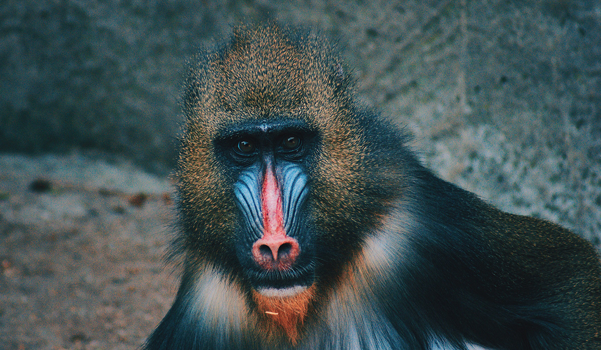

Animais Fantásticos


Raposa Vermelha (Vulpes vulpes)
É a maior espécie de raposa do mundo, nativa da América do Norte, Europa, Ásia e África. As raposas-vermelhas são conhecidas por sua inteligência, velocidade e agilidade.
Idade Média
A idade média de uma raposa-vermelha na natureza é de 3 a 4 anos. No entanto, alguns indivíduos podem viver até 10 anos em cativeiro.
Resumo
A raposa-vermelha é um animal inteligente, veloz, ágil e com sentidos aguçados. Ela é um membro importante do ecossistema e desempenha um papel vital no controle das populações de presas.
Essquilo Vermelho (Sciurus vulgaris)
É um pequeno roedor nativo da Europa, Ásia e América do Norte. Os esquilos-vermelhos são conhecidos por sua pelagem vermelha característica, sua cauda longa e espessa e sua capacidade de subir em árvores.
Idade Média
A idade média de um esquilo-vermelho na natureza é de 2 a 3 anos. No entanto, alguns indivíduos podem viver até 10 anos em cativeiro.
Resumo
O esquilo-vermelho é um animal ágil, inteligente e com sentidos aguçados. Ele é um membro importante do ecossistema e desempenha um papel vital na dispersão de sementes e no controle das populações de insetos.
urso-negro (Ursus americanus)
É a espécie de urso mais comum na América do Norte, com uma ampla distribuição que se estende do Alasca ao México. Os ursos-negros são conhecidos por sua pelagem preta característica, seu grande porte e sua capacidade de andar sobre as patas traseiras.
Idade Média
A idade média de um urso-negro na natureza é de 20 a 30 anos. No entanto, alguns indivíduos podem viver até 50 anos em cativeiro.
Resumo
O urso-negro é um animal forte, inteligente e com sentidos aguçados. Ele é um membro importante do ecossistema e desempenha um papel vital na dispersão de sementes e no controle das populações de animais.
lobo-cinzento (Canis lupus)
É a maior espécie de lobo selvagem do mundo, com uma ampla distribuição que se estende do Ártico à América do Norte, Ásia e Europa. Os lobos-cinzentos são conhecidos por seu tamanho grande, pelagem densa e uivo característico.
Idade Média
A idade média de um lobo-cinzento na natureza é de 6 a 8 anos. No entanto, alguns indivíduos podem viver até 13 anos em cativeiro.
Resumo
O lobo-cinzento é um animal forte, inteligente e com sentidos aguçados. Ele é um membro importante do ecossistema e desempenha um papel vital no controle das populações de animais.
Macaco Mandril (Mandrillus sphinx)
O mandril é um primata fascinante encontrado nas florestas tropicais da África Central.
Idade Média
A média de idade do macaco mandril na natureza é de cerca de 20 anos, mas eles podem viver mais tempo em cativeiro, às vezes até 30 anos. Esses primatas são conhecidos por suas cores vibrantes e habilidades sociais complexas.
Resumo
Esses primatas coloridos e sociais são uma parte importante dos ecossistemas africanos!
leão-da-montanha (Puma concolor)
Ele, também conhecido como puma, onça-parda e pantera-da-montanha. É um felino nativo da América do Norte e do Sul, com a maior distribuição de qualquer mamífero terrestre nas Américas. Os leões-da-montanha são conhecidos por seu corpo grande e musculoso, sua pelagem marrom-avermelhada e sua capacidade de saltar grandes alturas.
Idade Média
A idade média de um leão-da-montanha na natureza é de 10 a 15 anos. No entanto, alguns indivíduos podem viver até 20 anos em cativeiro.
Resumo
O leão-da-montanha é um animal forte, inteligente e com sentidos aguçados. Ele é um membro importante do ecossistema e desempenha um papel vital no controle das populações de animais.
FAQ
- Qual a idade dos animais?
- As raposas são animais mamíferos e onívoros pertencentes à família Canidae. São vulpídeos de porte médio, caracterizados por um focinho comprido e uma cauda longa e peluda
- Eles são fantásticos?
- Também apresentam como particularidade suas pupilas ovais, semelhantes às pupilas verticais dos felídeos.
- Qual a diferença?
- As raposas são animais mamíferos e onívoros pertencentes à família Canidae. São vulpídeos de porte médio, caracterizados por um focinho comprido e uma cauda longa e peluda.
- Como proteger?
- Também apresentam como particularidade suas pupilas ovais, semelhantes às pupilas verticais dos felídeos.


- 

Números
Contato

- dev-oliveira@outlook.com.br
- +55(11) 96833-6094
- Rua dos Desenvolvedores n° 71
- São Paulo - SP
- Seg à Sex das 8 ás 18
- Doe0Bitcoin para nos Ajudar